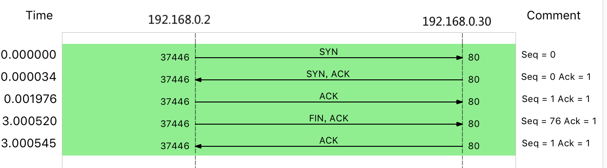

- 00 开篇词 别再让Linux性能问题成为你的绊脚石.md.html
- 01 如何学习Linux性能优化？.md.html
- 02 基础篇：到底应该怎么理解“平均负载”？.md.html
- 03 基础篇：经常说的 CPU 上下文切换是什么意思？（上）.md.html
- 04 基础篇：经常说的 CPU 上下文切换是什么意思？（下）.md.html
- 05 基础篇：某个应用的CPU使用率居然达到100%，我该怎么办？.md.html
- 06 案例篇：系统的 CPU 使用率很高，但为啥却找不到高 CPU 的应用？.md.html
- 07 案例篇：系统中出现大量不可中断进程和僵尸进程怎么办？（上）.md.html
- 08 案例篇：系统中出现大量不可中断进程和僵尸进程怎么办？（下）.md.html
- 09 基础篇：怎么理解Linux软中断？.md.html
- 10 案例篇：系统的软中断CPU使用率升高，我该怎么办？.md.html
- 11 套路篇：如何迅速分析出系统CPU的瓶颈在哪里？.md.html
- 12 套路篇：CPU 性能优化的几个思路.md.html
- 13 答疑（一）：无法模拟出 RES 中断的问题，怎么办？.md.html
- 14 答疑（二）：如何用perf工具分析Java程序？.md.html
- 15 基础篇：Linux内存是怎么工作的？.md.html
- 16 基础篇：怎么理解内存中的Buffer和Cache？.md.html
- 17 案例篇：如何利用系统缓存优化程序的运行效率？.md.html
- 18 案例篇：内存泄漏了，我该如何定位和处理？.md.html
- 19 案例篇：为什么系统的Swap变高了（上）.md.html
- 20 案例篇：为什么系统的Swap变高了？（下）.md.html
- 21 套路篇：如何“快准狠”找到系统内存的问题？.md.html
- 22 答疑（三）：文件系统与磁盘的区别是什么？.md.html
- 23 基础篇：Linux 文件系统是怎么工作的？.md.html
- 24 基础篇：Linux 磁盘I_O是怎么工作的（上）.md.html
- 25 基础篇：Linux 磁盘I_O是怎么工作的（下）.md.html
- 26 案例篇：如何找出狂打日志的“内鬼”？.md.html
- 27 案例篇：为什么我的磁盘I_O延迟很高？.md.html
- 28 案例篇：一个SQL查询要15秒，这是怎么回事？.md.html
- 29 案例篇：Redis响应严重延迟，如何解决？.md.html
- 30 套路篇：如何迅速分析出系统I_O的瓶颈在哪里？.md.html
- 31 套路篇：磁盘 I_O 性能优化的几个思路.md.html
- 32 答疑（四）：阻塞、非阻塞 I_O 与同步、异步 I_O 的区别和联系.md.html
- 33 关于 Linux 网络，你必须知道这些（上）.md.html
- 34 关于 Linux 网络，你必须知道这些（下）.md.html
- 35 基础篇：C10K 和 C1000K 回顾.md.html
- 36 套路篇：怎么评估系统的网络性能？.md.html
- 37 案例篇：DNS 解析时快时慢，我该怎么办？.md.html
- 38 案例篇：怎么使用 tcpdump 和 Wireshark 分析网络流量？.md.html
- 39 案例篇：怎么缓解 DDoS 攻击带来的性能下降问题？.md.html
- 40 案例篇：网络请求延迟变大了，我该怎么办？.md.html
- 41 案例篇：如何优化 NAT 性能？（上）.md.html
- 42 案例篇：如何优化 NAT 性能？（下）.md.html
- 43 套路篇：网络性能优化的几个思路（上）.md.html
- 44 套路篇：网络性能优化的几个思路（下）.md.html
- 45 答疑（五）：网络收发过程中，缓冲区位置在哪里？.md.html
- 46 案例篇：为什么应用容器化后，启动慢了很多？.md.html
- 47 案例篇：服务器总是时不时丢包，我该怎么办？（上）.md.html
- 48 案例篇：服务器总是时不时丢包，我该怎么办？（下）.md.html
- 49 案例篇：内核线程 CPU 利用率太高，我该怎么办？.md.html
- 50 案例篇：动态追踪怎么用？（上）.md.html
- 51 案例篇：动态追踪怎么用？（下）.md.html
- 52 案例篇：服务吞吐量下降很厉害，怎么分析？.md.html
- 53 套路篇：系统监控的综合思路.md.html
- 54 套路篇：应用监控的一般思路.md.html
- 55 套路篇：分析性能问题的一般步骤.md.html
- 56 套路篇：优化性能问题的一般方法.md.html
- 57 套路篇：Linux 性能工具速查.md.html
- 58 答疑（六）：容器冷启动如何性能分析？.md.html
- 加餐（一） 书单推荐：性能优化和Linux 系统原理.md.html
- 加餐（二） 书单推荐：网络原理和 Linux 内核实现.md.html
- 用户故事 “半路出家 ”，也要顺利拿下性能优化！.md.html
- 用户故事 运维和开发工程师们怎么说？.md.html
- 结束语 愿你攻克性能难关.md.html
- 捐赠
48 案例篇：服务器总是时不时丢包，我该怎么办？（下）
你好，我是倪朋飞。
上一节，我们一起学习了如何分析网络丢包的问题，特别是从链路层、网络层以及传输层等主要的协议栈中进行分析。
不过，通过前面这几层的分析，我们还是没有找出最终的性能瓶颈。看来，还是要继续深挖才可以。今天，我们就来继续分析这个未果的案例。
在开始下面的内容前，你可以先回忆一下上节课的内容，并且自己动脑想一想，除了我们提到的链路层、网络层以及传输层之外，还有哪些潜在问题可能会导致丢包呢？
iptables
首先我们要知道，除了网络层和传输层的各种协议，iptables 和内核的连接跟踪机制也可能会导致丢包。所以，这也是发生丢包问题时，我们必须要排查的一个因素。
我们先来看看连接跟踪，我已经在 如何优化NAT性能 文章中，给你讲过连接跟踪的优化思路。要确认是不是连接跟踪导致的问题，其实只需要对比当前的连接跟踪数和最大连接跟踪数即可。
不过，由于连接跟踪在 Linux 内核中是全局的（不属于网络命名空间），我们需要退出容器终端，回到主机中来查看。
你可以在容器终端中，执行 exit ；然后执行下面的命令，查看连接跟踪数：
# 容器终端中执行exit
root@nginx:/# exit
exit
# 主机终端中查询内核配置
$ sysctl net.netfilter.nf_conntrack_max
net.netfilter.nf_conntrack_max = 262144
$ sysctl net.netfilter.nf_conntrack_count
net.netfilter.nf_conntrack_count = 182
从这儿你可以看到，连接跟踪数只有 182，而最大连接跟踪数则是 262144。显然，这里的丢包，不可能是连接跟踪导致的。
接着，再来看 iptables。回顾一下 iptables 的原理，它基于 Netfilter 框架，通过一系列的规则，对网络数据包进行过滤（如防火墙）和修改（如 NAT）。
这些 iptables 规则，统一管理在一系列的表中，包括 filter（用于过滤）、nat（用于NAT）、mangle（用于修改分组数据） 和 raw（用于原始数据包）等。而每张表又可以包括一系列的链，用于对 iptables 规则进行分组管理。
对于丢包问题来说，最大的可能就是被 filter 表中的规则给丢弃了。要弄清楚这一点，就需要我们确认，那些目标为 DROP 和 REJECT 等会弃包的规则，有没有被执行到。
你可以把所有的 iptables 规则列出来，根据收发包的特点，跟 iptables 规则进行匹配。不过显然，如果 iptables 规则比较多，这样做的效率就会很低。
当然，更简单的方法，就是直接查询 DROP 和 REJECT 等规则的统计信息，看看是否为 0。如果统计值不是 0 ，再把相关的规则拎出来进行分析。
我们可以通过 iptables -nvL 命令，查看各条规则的统计信息。比如，你可以执行下面的 docker exec 命令，进入容器终端；然后再执行下面的 iptables 命令，就可以看到 filter 表的统计数据了：
# 在主机中执行
$ docker exec -it nginx bash
# 在容器中执行
root@nginx:/# iptables -t filter -nvL
Chain INPUT (policy ACCEPT 25 packets, 1000 bytes)
pkts bytes target prot opt in out source destination
6 240 DROP all -- * * 0.0.0.0/0 0.0.0.0/0 statistic mode random probability 0.29999999981
Chain FORWARD (policy ACCEPT 0 packets, 0 bytes)
pkts bytes target prot opt in out source destination
Chain OUTPUT (policy ACCEPT 15 packets, 660 bytes)
pkts bytes target prot opt in out source destination
6 264 DROP all -- * * 0.0.0.0/0 0.0.0.0/0 statistic mode random probability 0.29999999981
从 iptables 的输出中，你可以看到，两条 DROP 规则的统计数值不是 0，它们分别在 INPUT 和 OUTPUT 链中。这两条规则实际上是一样的，指的是使用 statistic 模块，进行随机 30% 的丢包。
再观察一下它们的匹配规则。0.0.0.0/0 表示匹配所有的源 IP 和目的 IP，也就是会对所有包都进行随机 30% 的丢包。看起来，这应该就是导致部分丢包的“罪魁祸首”了。
既然找出了原因，接下来的优化就比较简单了。比如，把这两条规则直接删除就可以了。我们可以在容器终端中，执行下面的两条 iptables 命令，删除这两条 DROP 规则：
root@nginx:/# iptables -t filter -D INPUT -m statistic --mode random --probability 0.30 -j DROP
root@nginx:/# iptables -t filter -D OUTPUT -m statistic --mode random --probability 0.30 -j DROP
删除后，问题是否就被解决了呢？我们可以切换到终端二中，重新执行刚才的 hping3 命令，看看现在是否正常：
$ hping3 -c 10 -S -p 80 192.168.0.30
HPING 192.168.0.30 (eth0 192.168.0.30): S set, 40 headers + 0 data bytes
len=44 ip=192.168.0.30 ttl=63 DF id=0 sport=80 flags=SA seq=0 win=5120 rtt=11.9 ms
len=44 ip=192.168.0.30 ttl=63 DF id=0 sport=80 flags=SA seq=1 win=5120 rtt=7.8 ms
...
len=44 ip=192.168.0.30 ttl=63 DF id=0 sport=80 flags=SA seq=9 win=5120 rtt=15.0 ms
--- 192.168.0.30 hping statistic ---
10 packets transmitted, 10 packets received, 0% packet loss
round-trip min/avg/max = 3.3/7.9/15.0 ms
这次输出你可以看到，现在已经没有丢包了，并且延迟的波动变化也很小。看来，丢包问题应该已经解决了。
不过，到目前为止，我们一直使用的 hping3 工具，只能验证案例 Nginx 的 80 端口处于正常监听状态，却还没有访问 Nginx 的 HTTP 服务。所以，不要匆忙下结论结束这次优化，我们还需要进一步确认，Nginx 能不能正常响应 HTTP 请求。
我们继续在终端二中，执行如下的 curl 命令，检查 Nginx 对 HTTP 请求的响应：
$ curl --max-time 3 http://192.168.0.30
curl: (28) Operation timed out after 3000 milliseconds with 0 bytes received
从 curl 的输出中，你可以发现，这次连接超时了。可是，刚才我们明明用 hping3 验证了端口正常，现在却发现 HTTP 连接超时，是不是因为 Nginx 突然异常退出了呢？
不妨再次运行 hping3 来确认一下：
$ hping3 -c 3 -S -p 80 192.168.0.30
HPING 192.168.0.30 (eth0 192.168.0.30): S set, 40 headers + 0 data bytes
len=44 ip=192.168.0.30 ttl=63 DF id=0 sport=80 flags=SA seq=0 win=5120 rtt=7.8 ms
len=44 ip=192.168.0.30 ttl=63 DF id=0 sport=80 flags=SA seq=1 win=5120 rtt=7.7 ms
len=44 ip=192.168.0.30 ttl=63 DF id=0 sport=80 flags=SA seq=2 win=5120 rtt=3.6 ms
--- 192.168.0.30 hping statistic ---
3 packets transmitted, 3 packets received, 0% packet loss
round-trip min/avg/max = 3.6/6.4/7.8 ms
奇怪，hping3 的结果显示，Nginx 的 80 端口确确实实还是正常状态。这该如何是好呢？别忘了，我们还有个大杀器——抓包操作。看来有必要抓包看看了。
tcpdump
接下来，我们切换回终端一，在容器终端中，执行下面的 tcpdump 命令，抓取 80 端口的包：
root@nginx:/# tcpdump -i eth0 -nn port 80
tcpdump: verbose output suppressed, use -v or -vv for full protocol decode
listening on eth0, link-type EN10MB (Ethernet), capture size 262144 bytes
然后，切换到终端二中，再次执行前面的 curl 命令：
$ curl --max-time 3 http://192.168.0.30/
curl: (28) Operation timed out after 3000 milliseconds with 0 bytes received
等到curl 命令结束后，再次切换回终端一，查看 tcpdump 的输出：
14:40:00.589235 IP 10.255.255.5.39058 > 172.17.0.2.80: Flags [S], seq 332257715, win 29200, options [mss 1418,sackOK,TS val 486800541 ecr 0,nop,wscale 7], length 0
14:40:00.589277 IP 172.17.0.2.80 > 10.255.255.5.39058: Flags [S.], seq 1630206251, ack 332257716, win 4880, options [mss 256,sackOK,TS val 2509376001 ecr 486800541,nop,wscale 7], length 0
14:40:00.589894 IP 10.255.255.5.39058 > 172.17.0.2.80: Flags [.], ack 1, win 229, options [nop,nop,TS val 486800541 ecr 2509376001], length 0
14:40:03.589352 IP 10.255.255.5.39058 > 172.17.0.2.80: Flags [F.], seq 76, ack 1, win 229, options [nop,nop,TS val 486803541 ecr 2509376001], length 0
14:40:03.589417 IP 172.17.0.2.80 > 10.255.255.5.39058: Flags [.], ack 1, win 40, options [nop,nop,TS val 2509379001 ecr 486800541,nop,nop,sack 1 {76:77}], length 0
经过这么一系列的操作，从 tcpdump 的输出中，我们就可以看到：
前三个包是正常的 TCP 三次握手，这没问题；
但第四个包却是在 3 秒以后了，并且还是客户端（VM2）发送过来的 FIN 包，也就说明，客户端的连接关闭了。
我想，根据 curl 设置的 3 秒超时选项，你应该能猜到，这是因为 curl 命令超时后退出了。
我把这一过程，用 TCP 交互的流程图（实际上来自 Wireshark 的 Flow Graph）来表示，你可以更清楚地看到上面这个问题：
- 这里比较奇怪的是，我们并没有抓取到 curl 发来的 HTTP GET 请求。那么，究竟是网卡丢包了，还是客户端压根儿就没发过来呢？
我们可以重新执行 netstat -i 命令，确认一下网卡有没有丢包问题：
root@nginx:/# netstat -i
Kernel Interface table
Iface MTU RX-OK RX-ERR RX-DRP RX-OVR TX-OK TX-ERR TX-DRP TX-OVR Flg
eth0 100 157 0 344 0 94 0 0 0 BMRU
lo 65536 0 0 0 0 0 0 0 0 LRU
从 netstat 的输出中，你可以看到，接收丢包数（RX-DRP）是 344，果然是在网卡接收时丢包了。不过问题也来了，为什么刚才用 hping3 时不丢包，现在换成 GET 就收不到了呢？
还是那句话，遇到搞不懂的现象，不妨先去查查工具和方法的原理。我们可以对比一下这两个工具：
hping3 实际上只发送了 SYN 包；
而 curl 在发送 SYN 包后，还会发送 HTTP GET 请求。
HTTP GET ，本质上也是一个 TCP 包，但跟 SYN 包相比，它还携带了 HTTP GET 的数据。
那么，通过这个对比，你应该想到了，这可能是 MTU 配置错误导致的。为什么呢？
其实，仔细观察上面 netstat 的输出界面，第二列正是每个网卡的 MTU 值。eth0 的 MTU 只有 100，而以太网的 MTU 默认值是 1500，这个100 就显得太小了。
当然，MTU 问题是很好解决的，把它改成 1500 就可以了。我们继续在容器终端中，执行下面的命令，把容器 eth0 的 MTU 改成 1500：
root@nginx:/# ifconfig eth0 mtu 1500
修改完成后，再切换到终端二中，再次执行 curl 命令，确认问题是否真的解决了：
$ curl --max-time 3 http://192.168.0.30/
<!DOCTYPE html>
<html>
...
<p><em>Thank you for using nginx.</em></p>
</body>
</html>
非常不容易呀，这次终于看到了熟悉的 Nginx 响应，说明丢包的问题终于彻底解决了。
当然，案例结束前，不要忘记停止今天的 Nginx 应用。你可以切换回终端一，在容器终端中执行 exit 命令，退出容器终端：
root@nginx:/# exit
exit
最后，再执行下面的 docker 命令，停止并删除 Nginx 容器：
$ docker rm -f nginx
小结
今天，我继续带你分析了网络丢包的问题。特别是在时不时丢包的情况下，定位和优化都需要我们花心思重点投入。
网络丢包问题的严重性不言而喻。碰到丢包问题时，我们还是要从 Linux 网络收发的流程入手，结合 TCP/IP 协议栈的原理来逐层分析。
思考
最后，我想邀请你一起来聊聊，你碰到过的网络丢包问题。你是怎么分析它们的根源？又是怎么解决的？你可以结合我的讲解，总结自己的思路。
欢迎在留言区和我讨论，也欢迎把这篇文章分享给你的同事、朋友。我们一起在实战中演练，在交流中进步。
© 2019 - 2023 Liangliang Lee. Powered by gin and hexo-theme-book.